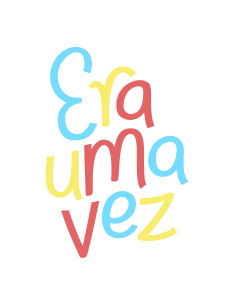

deus no comando

Ghost

Dino

O Menino Azul – Cecília Meireles
O menino quer um burrinho
Um burrinho manso,
que não corra nem pule,
mas que saiba conversar.
O menino quer um burrinho
que saiba dizer
o nome dos rios,
das montanhas, das flores,
– de tudo o que aparecer.
que saiba inventar histórias bonitas
com pessoas e bichos
e com barquinhos no mar.
E os dois sairão pelo mundo
que é como um jardim
apenas mais largo
e talvez mais comprido
e que não tenha fim.
(Quem souber de um burrinho desses,
pode escrever
para a Ruas das Casas,
Número das Portas,
ao Menino Azul que não sabe ler).